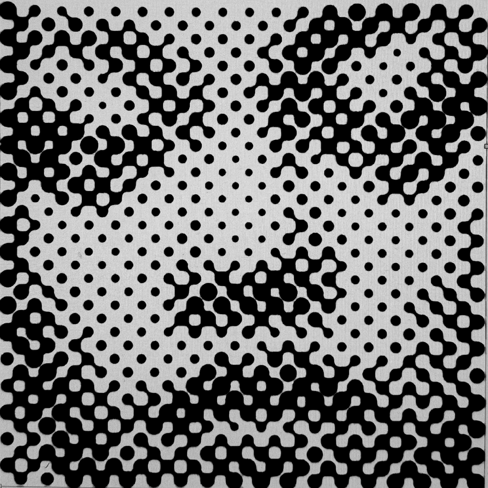

Why do we replay the songs that wreck us?
Most modern media is built around escaping discomfort. We scroll past bad news, trade books for reels, and fine-tune our feeds to never disagree with us. But, music is the exception.
Research on sad music suggests we seek it out for emotional catharsis without real-life stakes — a place to sit inside grief, longing, and heartbreak instead of moving past them.
So, if music is one of the rare places we go to feel things safely, the songs we call the greatest should show it.

Which raises the question: when we go to the ends of the earth to avoid pain, do we want our music to hurt?
To find out, I scraped the lyrics for all ~7,000 songs on the 500 Greatest Albums of All Time. Then, I deployed a language model that reads each song's lyrics and answered the question: does this song want you to stay in the feeling (dwell), or get past it (escape)?
The distinction comes from philosopher Kieran Setiya, who separates atelic experiences — valued in the doing, with no endpoint — from telic ones, aimed at getting somewhere.
No single emotional direction dominates every year. But when albums commit fully to one, dwelling wins decisively.
Across the list, pure Dwellers outnumber pure Escapers 3.25 to 1.
Do we want our music to hurt?
At first, the answer looks mixed. Albums fall into a near-perfect bell curve, with most balancing dwelling, escaping, and narration. But at the extremes, that balance disappears. Instead, roughly three out of four emotionally pure albums dwell in pain rather than escape it.
Albums are long-form. You might expect them to resolve emotional conflict like books or movies do. But music can stay inside a difficult feeling without feeling stuck.
Yet as the album became the single, and then the snippet, the time we gave that feeling shrank too. We haven’t stopped seeking discomfort. We just want it in forms that demand less attention.
So perhaps the question isn’t whether we want our music to hurt, but how long we’re willing to sit with the hurt.
to start exploring
Explore all 490 albums by emotional lean.
6,748 lyrics from the 2023 Rolling Stone 500, each classified by Claude Haiku as dwelling, escaping, or narrating; albums are scored by their share of dwelling songs minus escaping songs. The sections below expand on how — and on what this analysis can and cannot claim.
Album ranks came from Rolling Stone’s 2023 edition of the 500 Greatest Albums of All Time. Lyrics were collected from Genius, matched through the Genius API and scraped with a headless pipeline. The final dataset contains 6,748 song lyrics. Nine instrumental albums are excluded from every ratio.
Each song’s lyrics were sent to Claude Haiku through Anthropic’s Batch API using structured outputs. The model assigned exactly one label — dwelling, escaping, or narrating — based on a fixed rubric adapted from Kieran Setiya’s distinction between atelic experiences, valued in the doing, and telic experiences, directed toward an endpoint.
The model considered lyrics only, without audio, performance, biography, or historical context. Mixed songs were forced into the single category that best represented their dominant orientation, so the results should be read as systematic interpretation rather than objective psychological fact.
For each album, emotional lean equals its share of dwelling songs minus its share of escaping songs; narrating songs remain in the denominator and pull the score toward zero. Positive scores lean toward dwelling, negative scores toward escaping, and scores near zero indicate balance or a large narrating share. Using proportions rather than raw counts keeps longer albums from carrying more weight simply because they contain more tracks.
Annual values are the mean album lean for each release year. Every year appears in the visualization, but individual years are interpreted only when at least five albums are represented. A five-year rolling average shows the broader pattern. Keyframes identify the two highest eligible years, the two lowest, and the largest five-year shifts toward dwelling and escaping.
Cultural and technological events are offered as possible readings of the pattern, not proven causes. This dataset represents Rolling Stone’s retrospective canon — not every song released, the Billboard charts, or listener behavior — and cannot isolate the effects of genre, production, technology, or historical events. The annotations are therefore journalistic hypotheses grounded in the data and clearly separated from what the analysis can establish.
These four moments pair the dataset’s largest shifts with changes in how music was made, distributed, and heard — the emotional shape of music may change with its container.